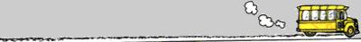

버스에서 아주머니께 자리를 양보해드리려고 하면 간혹 듣는 말씀이 "괜찮아요. 금방 내려요" 라는 사양의 말이다.
그러니까 금방 내리는 사람은 서서 가도 되고 오래 가는 사람은 앉아서 가야 한다는 뜻이지.
그런데 이걸 시스템 프로그래머의 입장에서 보면 분명 엉터리다.
자리를 하나의 공유 자원(Shared resource)으로 보고 사람을 이에 접근하려는 프로세스(Process)로 본다면 자원을 가장 오래 사용하려는 프로세스에게 자원을 할당해주는 엉터리같은 스케쥴링(Scheduling)이 되는 것이다.
쉽게 설명하면 이런거다.
10명의 승객이 한 자리를 놓고 서 있다.
각자 1정거장~10정거장까지 간다고 치자.
우리의 상식대로라면 10정거장을 가는 사람이 자리에 앉아야 한다.
그럼 나머지 사람들은 단 한번도 자원에 접근조차 못한채 여행을 마쳐야 하는 것이다.
이런걸 시스템 프로그래밍에서는 기아(Starvation; 굶주림)라고 한다.
자원의 독점에 의해 굶주리는 것이다.
만약에 가장 금방 내리는 사람이 자리에 앉게 된다면 모든 사용자가 1정거장은 앉아서 갈 수 있다.
자원의 균등분배라는 입장에서 보면 다음과 같은 상황을 상상해 볼 수 있다.
나: "아주머니 여기 앉으세요. 전 금방 내립니다."
아줌마: "괜찮아요. 난 종점까지 가요."
아줌마는 내가 내리면 어차피 앉을테니 그냥 가라는 말을 한거다.
자원 분배에 아주 좋은 알고리즘을 갖고 계신 분이다.
물론 이 내용은 농담이다.
나도 이게 맞다고 생각하는건 아니다.
그저 생각은 이렇게 바뀔수도 있다는걸 보여주고 싶었다.